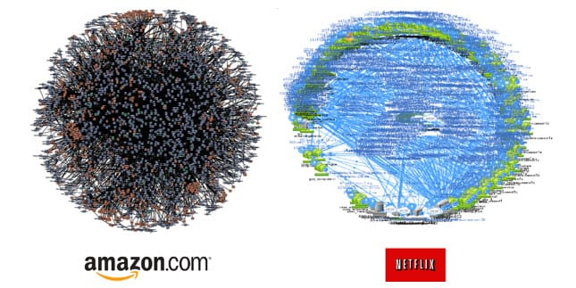

Quality - rethought
How things have been changed in the last 100 years
Agenda
- Perfection
- Agile
- Excellence
Robert Bosch - 1919
« It has always been unbearable for me to imagine that someone could inspect one of my products and find it inferior in any way. »
Perfect Quality!?
Google search: (number of results from 11.7.22)
"Bosch outage" - 2.690.000
"App Store outage" - 5.660.000.000
"Play Store outage" - 4.890.000.000
"Windows store outage" - 8.220.000
Bug Free Software!
?
Expecting your developers to write bug-free code is unrealistic. Try not to focus on bug free code. Keep your focus on giving your early adopters a product with good functionality that can solve their pains.
Software (development) is increasingly complex

We're building up on code, not only where we write it, but also on everything we depend on.
How to ensure quality then?
Rigorous testing before launch.
Constant updates after launch.
to meet technology changes and ensure a good user experience.
Constant updates?
DF (Deployment Frequency): How often a team successfully
releases software.
MTTR (Mean Time To Recover):
The average time to fully resolve a failure.
DORA metrics
enabled engineering managers to get clear views on their software development and delivery processes and improve DevOps performance.
enabled engineering managers to get clear views on their software development and delivery processes and improve DevOps performance.
User Experience?
One of the agile key elements:
a real customers' collaboration to provide continuous feedback.
a real customers' collaboration to provide continuous feedback.
Bring value to the user, quick!
Scrum at Toyota
Go and See
Stop and Fix
kaizen at infinitum
Agile is a Path, not a Destination
It is not about frameworks or practices -
but a mindset and individuals.
but a mindset and individuals.
It is about coping with uncertainty
and reacting to change.
and reacting to change.
Most importantly: it is about focus
and bringing value to a customer.
and bringing value to a customer.
Software Quality
Quality assurance is a lifelong process.
You should strive for excellence, not perfection.
Parallels then and now: Excellence!
Craftsmanship.
Recommendation: Clean Code from Georg Grütter.
Sources
Image Sources
Presentation is published on github

https://riddy.github.io/quality-rethought/